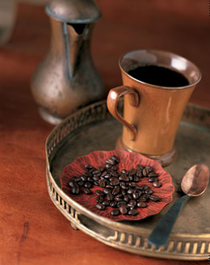

咖啡历史
咖啡的历史与咖啡的酿制方式，有着同样丰富的内容。它可以追溯到一千多年以前。
非洲——咖啡的起源之地
世界上第一株咖啡树是在非洲之角发现的。当地土著部落经常把咖啡的果实磨碎，再把它与动物脂肪掺在一起揉捏，做成许多球状的丸子。这些土著部落的人将这些咖啡丸子当成珍贵的食物，专供那些即将出征的战士享用。
当时，人们不了解咖啡食用者表现出亢奋是怎么一回事——他们不知道这是由咖啡的刺激性引起的，相反，人们把这当成是咖啡食用者所表现出来的宗教狂热。觉得这种饮料非常神秘，
它成了牧师和医生的专用品。流传至今，反映咖啡发现过程主要有两个故事。
一个故事说，一位放羊的牧民注意到这样一个现象：他的羊群在食用了野生咖啡树上的果实之后变得格外亢奋。出于好奇，他也尝了尝咖啡果。一尝之后，由于咖啡豆的作用，他也
像那些乱撞乱跳的山羊一样，开始手舞足蹈起来。发生在牧民身上的这一幕，恰恰被一群僧侣撞个正着。于是，每当有必要在夜间举行宗教仪式时，这些僧侣都用咖啡豆煮成汤水喝下，用这种方法来使自己保持清醒。
还有一个故事是这样说的：一个穆斯林托钵僧被他的敌人赶入沙漠。在精神错乱的状态下，他听到声音，提示他采食身边的咖啡果。他把咖啡果放在水里，想把它们泡软，由于咖
啡果过于坚硬，他没有成功。不得已，他只好将浸泡咖啡豆的水喝了下去。最后，这个托钵僧就靠这种手段存活下来。当这个托钵僧走出沙漠之后，他觉得自己能够幸存，并且自己身上
之所以能够获得神奇的能量，全都是真主安拉相助的结果。于是，他就不停地向别人讲述这个故事，并且把这种配制饮料的方法介绍给了别人。
咖啡在世界上广泛传播
咖啡的种植始于15世纪。几百年的时间里，阿拉伯半岛的也门是世界上唯一的咖啡出产地，市场对咖啡的需求非常旺盛。在也门的摩卡港，当咖啡被装船外运时，往往需用重兵保护。同时，也门也采取种种措施来杜绝咖啡树苗被携带出境。
尽管有许多限制，来圣城麦加朝圣的穆斯林香客，还是偷偷地将咖啡树苗带回了自己的家乡，因此，咖啡很快就在印度落地生根。
当时，意大利的威尼斯，有无数的商船队与来自阿拉伯的商人进行香水、茶叶和纺织品交易。这样，咖啡也就通过威尼斯传播到了欧洲的广大地区。许多欧洲商人也就渐渐习惯饮用咖啡这种饮料了。
后来，在许多欧洲城市的街头，出现了兜售咖啡的小商贩，咖啡在欧洲得到了迅速普及。
对咖啡的强劲需求，为咖啡在原产地以外的其他地区迅速扩展打下了坚实的基础。17世纪，荷兰人将咖啡引到了自己的殖民地印度尼西亚。与此同时，法国人也开始在非洲种植咖啡。时至今日，咖啡成了地球上仅次于石油的第二大交易品!